This exam covers climate science and electricity, waves, light and heat, and scientific method. The original paper has two questions numbered 10 in Section B; here they are numbered 10 and 11, so the later questions are one higher than on paper.
Section A: Multiple choice (21 marks)
Which one of the following types of radiation is emitted by the Earth's surface back into space?
Which one of the following is an accepted and observed impact of the enhanced greenhouse effect?
What is the role of an inverter in a photovoltaic (PV) solar system?
Which of the following is not a greenhouse gas?
Which of the following combinations of charged objects would repel each other?
The resistance of a piece of nichrome wire is R = ρL / A, where L = length, A = cross-sectional area and ρ = resistivity of the material. Which of the following would decrease the resistance of a length of nichrome wire with a circular cross-section?
A bigger diameter means a bigger cross-sectional area A, so R = ρL / A is smaller.
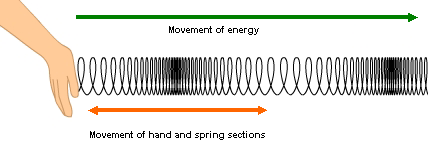
The image above shows a wave passing through a slinky spring. This wave is:
Question 8. Which of the following shows a correctly constructed DC circuit to measure the voltage and current for a 2.3 kΩ resistor?
Circuit A
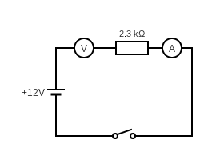
Circuit B
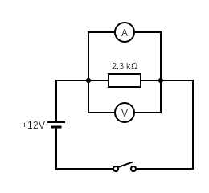
Circuit C
Circuit D
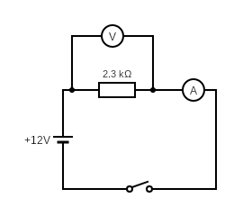
Which circuit is correct?
A voltmeter goes in parallel (across the resistor); an ammeter goes in series.
Questions 9 and 10 refer to the diagram below.
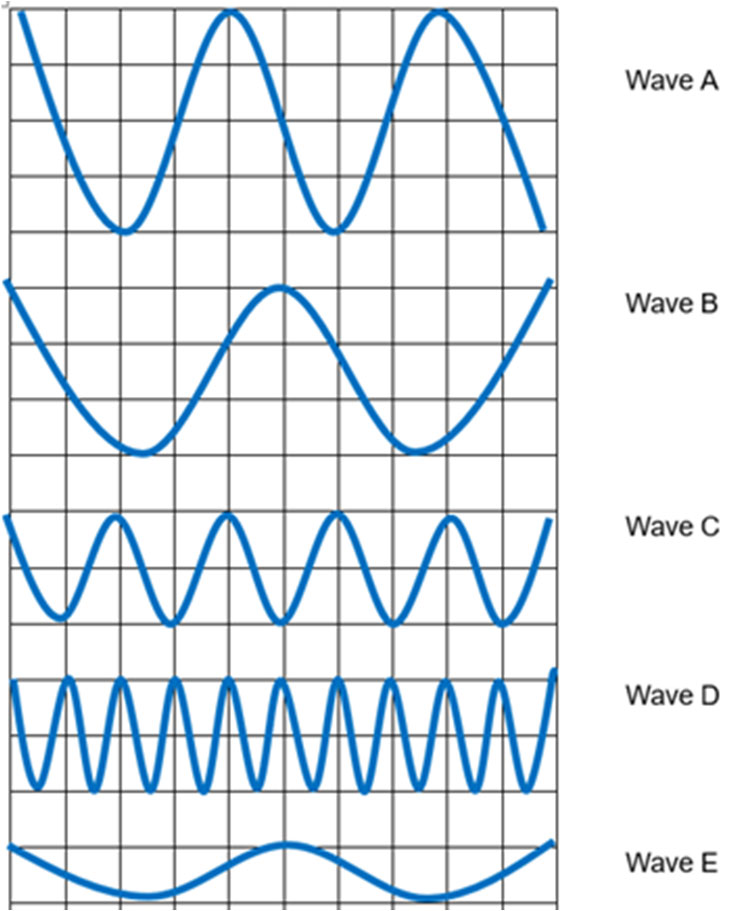
Select the correct statement:
Assuming that the waves shown are sound (pressure) waves, we can conclude that:
B and E have the same wavelength, so the same frequency (pitch). They differ only in amplitude (volume).
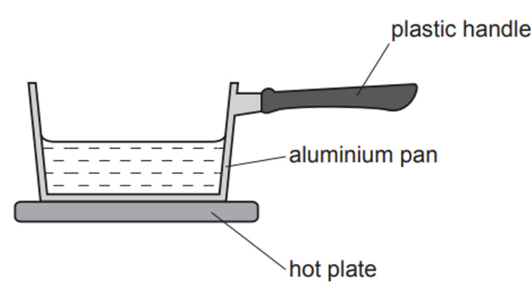
A saucepan on a hot plate is used to heat some water. Which best describes how heat is transferred through the aluminium pan, and through the water?
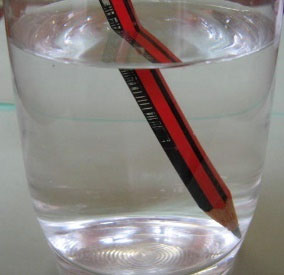
When we view a pencil that is partially immersed in water, it appears bent because:
During a stage performance, a technician shines a red spotlight and a cyan spotlight on the same white costume. What colour does the audience see where both lights overlap?
Cyan = green + blue, so red + cyan = red + green + blue = white.
On a hot summer day in Perth, the land heats up rapidly. Around mid-afternoon, a refreshing breeze known as the Fremantle Doctor blows in from the Indian Ocean, cooling the coast. What is the main reason it develops?
Which of the following would be described as a systematic error?
What is the name of the variable that is set by the experimenter and not changed throughout the experiment?
Which of the following is the basic form of a research question?
Which of the following is not a characteristic of a good hypothesis?
Which of the following would you not find in the evaluation section of a report?
Which of the following should be included in a good conclusion?
Which is a correct match of independent variable type and graph type? (The dependent variable is quantitative and continuous.)
Section B: Short answer (49 marks)
Complete the table, which lists key parts of the carbon cycle.
| Process | Carbon capture or release (into the atmosphere) | Formula / description |
|---|---|---|
| Respiration by living organisms | 6O2 + C6H12O6 → 6CO2 + 6H2O | |
| Combustion of fossil fuels (carbon) | Release | C + O2 → |
| Capture | 6CO2 + 6H2O → 6O2 + C6H12O6 | |
| Ocean uptake | Carbon dioxide is dissolved into lakes and oceans. |
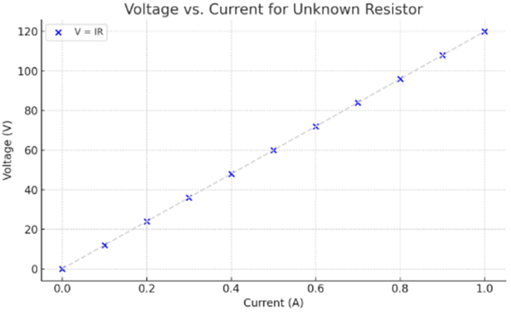
Students plotted this voltage–current graph for an unknown resistor. Use the graph to determine the value of the resistor.
Resistance = gradient = voltage ÷ current = (60 − 0) ÷ (0.5 − 0) = 120 Ω (any two points on the line).
Dr Khor designs a wind turbine and records a voltage of 1.89 V and a current of 0.067 A. Calculate the power produced by the turbine, to the nearest milliwatt.
P = VI = 1.89 × 0.067 = 0.1266 W = 127 mW.
Question 4 (3 marks)
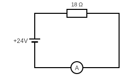
Electrons flow out of the terminal of the supply, around the circuit and back into the terminal (the opposite direction to conventional current).
Determine the current in the resistor, correct to 1 decimal place.
I = V / R = 24 ÷ 18 = 1.3 A.
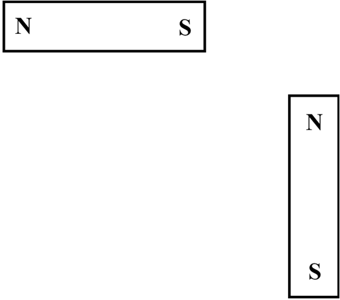
Draw (on paper) 6 field lines around the two bar magnets shown. Describe them, then compare.
Field lines leave each N pole and enter each S pole, curving around the magnets without ever crossing. Lines from the S end of the horizontal magnet curve in from the N pole of the vertical magnet, which is nearby, showing attraction between them; arrows point from N to S.
Consider these statements:
- Water vapour is a key contributor to the enhanced greenhouse effect.
- The rate of evaporation increases with temperature.
- Water vapour is added to the atmosphere through evaporation from oceans and lakes.
Explain how these three statements can lead to a positive feedback loop that contributes to climate change.
As atmosphere and ocean temperatures rise due to excess greenhouse gases, more water evaporates into the atmosphere (1 mark). More water vapour further enhances the greenhouse effect, causing more warming and so even more evaporation: this reinforcing effect is a positive feedback loop (1 mark).
Explain the two aspects of wind-generated electricity that make it a renewable energy source.
Any two:
- Wind is replenished by natural processes in a short time frame (the supply is not exhausted).
- Developing wind turbines does not negatively impact future generations.
- It does not emit carbon.
Question 8 (6 marks)
A swimming pool filter pump makes a wave on the surface of the pool with a period of 0.25 s. Calculate the frequency of this wave, to the nearest Hz.
f = 1 / T = 1 ÷ 0.25 = 4 Hz.
An electromagnetic radio wave with a frequency of 105 MHz is travelling through air. Calculate its wavelength, correct to 2 decimal places.
λ = v / f = 3.0 × 108 ÷ (105 × 106) = 2.86 m.
A bat sends out a high-pitched sound wave that takes 0.2 s to reflect off a nearby tree and return to the bat. How far away is the tree, to the nearest metre? Use v = 340 m/s.
d = v × t ÷ 2 = 340 × 0.2 ÷ 2 = 34 m (the sound travels there and back).
Question 9 (4 marks)
Complete the ray diagrams (on paper, or in your head) to show the path of light in each scenario.
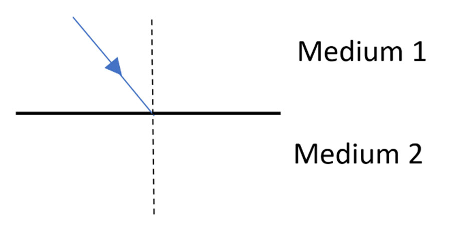
Medium 1 has a smaller refractive index than Medium 2. As the ray enters Medium 2 it and bends the normal.
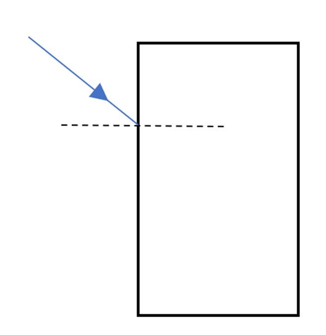
Describe the path of the ray as it moves from the air into the Perspex block, and then from the block back into the air.
Entering the block, the light slows down and bends towards the normal (1 mark). Leaving the block, it speeds up and bends away from the normal, so it comes out parallel to the original ray, shifted sideways (1 mark).
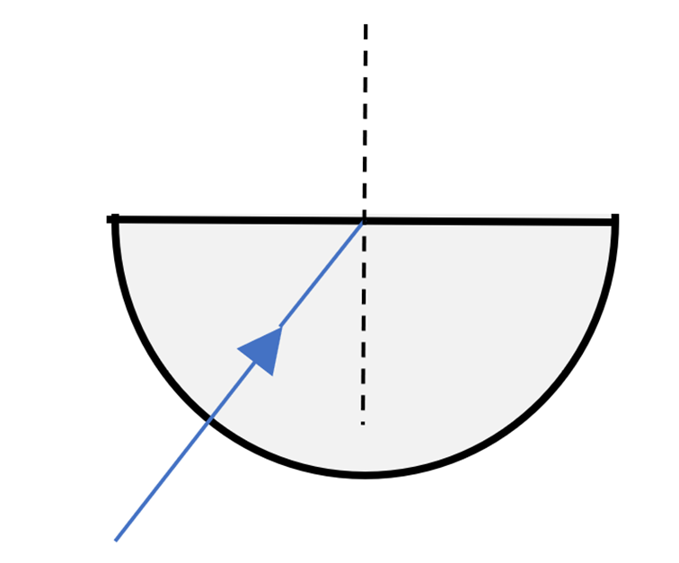
The incident ray has an angle of incidence greater than the critical angle, so the light undergoes , with the angle of reflection the angle of incidence.
Question 10 (4 marks)
A ray of red light strikes Mirror 1 at an angle of 55° to the normal. It reflects off Mirror 1 and then strikes Mirror 2, which is at 90° to Mirror 1.
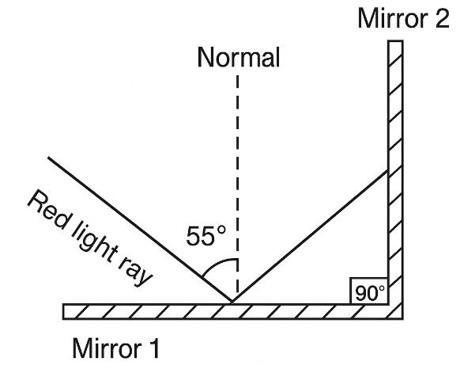
On paper, draw and label the normal at the point where the ray hits Mirror 2, and the reflected ray from Mirror 2. Describe them, then compare.
The normal at Mirror 2 is a dashed line perpendicular to Mirror 2, so it is horizontal (1 mark). The reflected ray leaves Mirror 2 on the other side of the normal, at the same angle, travelling back to the left and upwards, parallel to the original incoming ray but in the opposite direction (1 mark).
For Mirror 2: angle of incidence = °; angle of reflection = °.
The ray leaves Mirror 1 at 55° to the vertical normal, so it is 35° from the horizontal. The normal to Mirror 2 is horizontal, so i = r = 90° − 55° = 35°.
Question 11 (4 marks)
An art gallery displays Maurizio Cattelan's 2019 artwork "Comedian", a yellow banana taped to a wall, in a dark room. The banana is lit with coloured lights.
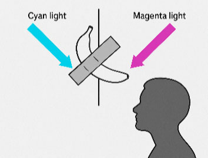
Under magenta light the banana appears . Under cyan light the banana appears .
For each light, describe what happens to the coloured light (which colours are absorbed or reflected) and how this determines what we see.
A yellow object reflects red and green light and absorbs blue.
- Magenta light is red + blue: the blue is absorbed and the red is reflected, so the banana looks red (1 mark).
- Cyan light is green + blue: the blue is absorbed and the green is reflected, so the banana looks green (1 mark).
Question 12 (5 marks)
Three Year 9 students are designing an experiment to investigate projectile motion. The range of a projectile launched from and landing on a level surface is
R = v2 × sin 2θ / g
where R = range (horizontal distance travelled), v = launch velocity, θ = angle of projection (from the horizontal) and g = acceleration due to gravity (9.8 m/s2). Air resistance is assumed to be negligible. The students want to change the launch velocity of the projectile and measure the range.
Write a research question for the students.
What is the effect of launch velocity on the range of a projectile?
State a hypothesis based on the background theory.
If the launch velocity increases, the range will increase (1 mark), in proportion to the square of the velocity, as shown by R = v2 × sin 2θ / g (1 mark).
- Independent variable:
- Dependent variable:
- A controlled variable:
Other controlled variables: air resistance (assumed none), strength of gravity, launch mechanism, landing height (same as launch).
Question 13 (7 marks)
Another group of students found data from an experiment testing the effect of current on the speed of a DC motor. Background theory suggests a linear relationship between current and speed.
| Current (A) | Trial 1 (m/s) | Trial 2 (m/s) | Trial 3 (m/s) | Trial 4 (m/s) | Average speed (m/s) |
|---|---|---|---|---|---|
| 0.50 | 1.49 | 1.52 | 1.51 | 1.50 | 1.51 |
| 1.00 | 2.99 | 3.01 | 3.00 | 3.02 | 3.01 |
| 1.50 | 4.52 | 4.50 | 4.53 | 4.51 | 4.52 |
| 2.00 | 5.98 | 6.01 | 6.00 | 5.99 | 6.00 |
| 2.50 | 7.49 | 7.50 | 7.48 | 7.51 | 7.50 |
On graph paper, plot average speed against current. Label the axes and add a title. Describe your graph, then compare.
Title, e.g. "Average speed (m/s) vs current (A)" (1 mark); current (A) on the x-axis and average speed (m/s) on the y-axis (1 mark); points plotted correctly with a straight line of best fit (1 mark).
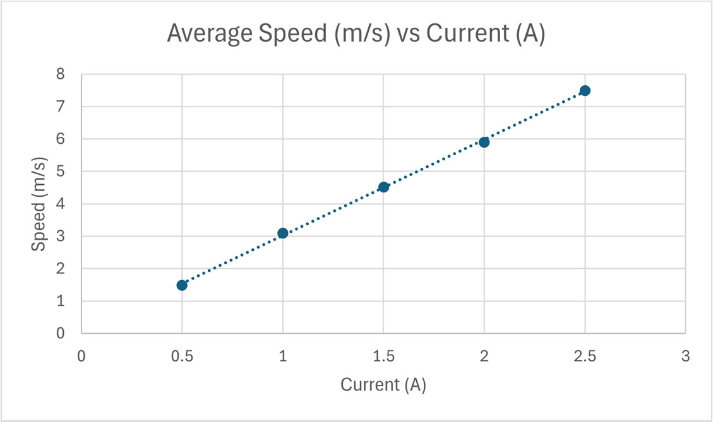
Comment on the strength of the correlation of the data, and justify your answer.
Very strong (positive, linear) correlation (1 mark): the plotted average points lie very close to (on) the trendline (1 mark).
Comment on the relative precision of the data, and justify your answer.
High precision (1 mark): there is very little variation between the trials, so the results are very consistent (1 mark).
A third group wants to find the speed of sound. Their method:
- Measure a distance of exactly 10 m between two people.
- Person A holds two wooden blocks, ready to clap them together.
- Person B stands at the other end with a stopwatch.
- When Person A claps the blocks, Person B starts the stopwatch when they hear the sound and stops it when they see the clap.
- Record the time and repeat the experiment once for accuracy.
- Use speed = distance ÷ time to calculate the speed of sound.
Critically evaluate their method and suggest three improvements to fix the errors you identify.
- A 10 m separation is too short for a precise measurement, given that sound travels at about 340 m/s (the time is only about 0.03 s): use a much longer distance (e.g. 100 m or more).
- Only 2 trials are done: do many more trials and average them.
- The method is wrong: Person B should start the stopwatch when they see the clap and stop it when they hear it (light travels much faster than sound).